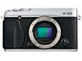
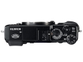
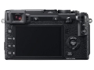

器材库 > APS及其以下画幅可换镜头数码相机 > X-E2

规格总览
产品类型
APS画幅可换镜头数码相机
发布日期
2013-10-18
影像规格
影像传感器
X-Trans CMOS II
影像传感器尺寸
23.6mm×15.6mm
总像素
1670万
有效像素
1630万
影像处理器
EXR 处理器 II
低通滤镜
无
静态图像格式
JPEG, RAW
短片尺寸
Full HD 1920x1080 60p/30p，HD 1280x720 60p/30p
除尘系统
超音波方式
镜头和对焦
镜头卡口
Fujifilm XF
曝光控制
曝光补偿
±3EV
ISO感光度
ISO200 – 6400，扩展至ISO 100、12800、25600，自动（可用的最大ISO设置范围为ISO 400 – ISO6400）
连拍
7张/秒
闪光灯
内置闪光灯
弹出式
取景器/显示屏
取景器
OLED电子取景器
取景范围
100%
屈光度调节范围
-4m-1～+2m-1
LCD类型
彩色TFT LCD
LCD尺寸
3.0英寸
LCD像素
104万
视野率
100%
文件输入/输出
存储卡
SD/SDHC, SDXC
无线功能
Wi-Fi
电源
电池
充电锂离子电池NP-W126
续航能力
可拍摄约350张
机身规格
颜色
黑色, 银/黑色
尺寸
129×74.9×37.2mm
重量
300g
zjize2014-12-26 16:414.94 分
操作性 5.00功能性 5.00美观性 5.00趣味性 5.00耐用性 4.50性价比 5.00解像力 5.00色彩还原 5.00
yaler2014-10-22 14:404.06 分
操作性 4.50功能性 4.50美观性 4.50趣味性 4.00耐用性 3.00性价比 4.50解像力 4.00色彩还原 3.50
zugui2014-09-28 09:343.63 分
操作性 3.50功能性 3.50美观性 4.00趣味性 3.50耐用性 3.50性价比 2.00解像力 4.50色彩还原 4.50
一菩2014-02-16 10:564.88 分
操作性 5.00功能性 5.00美观性 5.00趣味性 5.00耐用性 4.50性价比 4.50解像力 5.00色彩还原 5.00
peter2013-12-01 21:584.25 分
操作性 3.50功能性 4.50美观性 5.00趣味性 3.50耐用性 4.50性价比 3.00解像力 5.00色彩还原 5.00
产品图 / 样片
富士 X-E2

富士 X-E2

富士 X-E2
评测 / 相关文章
- 详细内容 （存档）
- 完善细节 富士X-E2详细评测 （存档）
- ［试用］X-E2冷门转接之Pen F 25/2.8 （存档）
- ［资讯］DIY：给富士X-E2弄个指柄 （存档）
- ［资讯］优化多项内容 富士发布X-E2最新固件升级 （存档）
- ［资讯］富士X系列数码相机及变焦镜头更新固件 （存档）
- ［试用］X-E2：纯手工DIY酸枝快门按钮和热靴盖 （存档）
- ［试用］富士X-E2一机双镜入手体会 （存档）
- ［试用］海外简评：富士X-E2 （存档）
- ［试用］富士新机XE2高清样片赏析 （存档）
- ［资讯］支持X-E2对焦系统 富士公布6款镜头新固件 （存档）
相关文章
- ［试用］X-T1的旅行，X-E2的随意 （原站已下线）
- ［试用］X-E2冷门转接之Pen F 25/2.8 （存档）
- ［资讯］DIY：给富士X-E2弄个指柄 （存档）
- ［资讯］优化多项内容 富士发布X-E2最新固件升级 （存档）
- ［资讯］富士X系列数码相机及变焦镜头更新固件 （存档）
- ［试用］X-E2：纯手工DIY酸枝快门按钮和热靴盖 （存档）
- ［试用］富士X-E2一机双镜入手体会 （存档）
- ［试用］海外简评：富士X-E2 （存档）
- ［试用］完善细节 富士X-E2详细评测 （存档）
- ［试用］富士新机XE2高清样片赏析 （存档）
- ［资讯］支持X-E2对焦系统 富士公布6款镜头新固件 （存档）